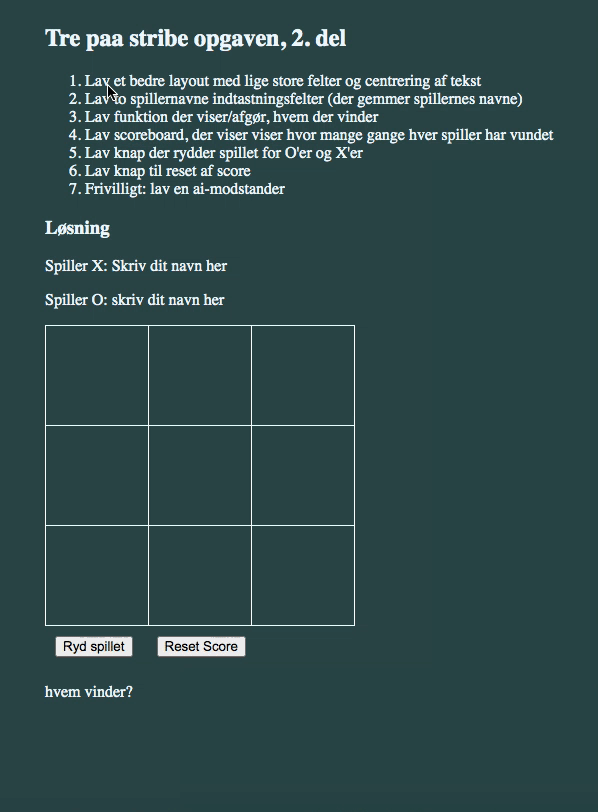

Opgave 2: Tre-På-Stribe
Nu med spillernavne, scoreboard og bedre layout
Materiale til opgaven
- Lidt repetition vedrørende html : HTML struktur og html-elementerne
- Lidt repetition vedrørende javascript
- Java (processing) stærke og statiske typer vs. Javascript har løse og dynamisk typer
- Javascripts funktioner skal ikke angive returtype
- Det er bedre at opdele sin kode i flere filer: en til html, en til css, og en til js
- To vigtige nye html-tags : knapper og input-felter
- Det er muligt ligefrem at indsætte nye html-tags vha. js
- Vigtigt : se også materiale fra sidst!
Opgave
